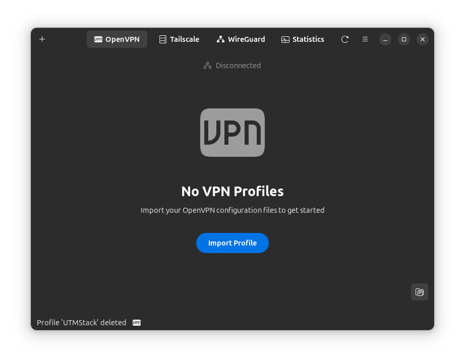
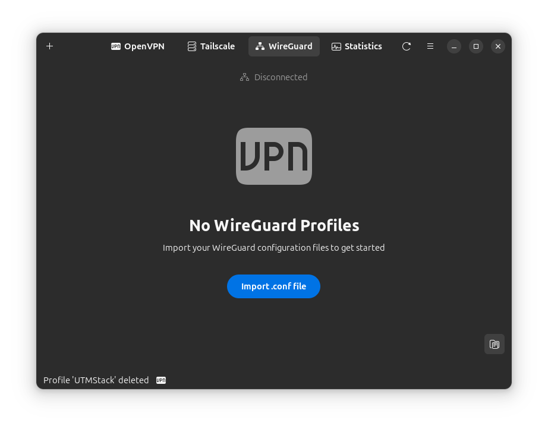
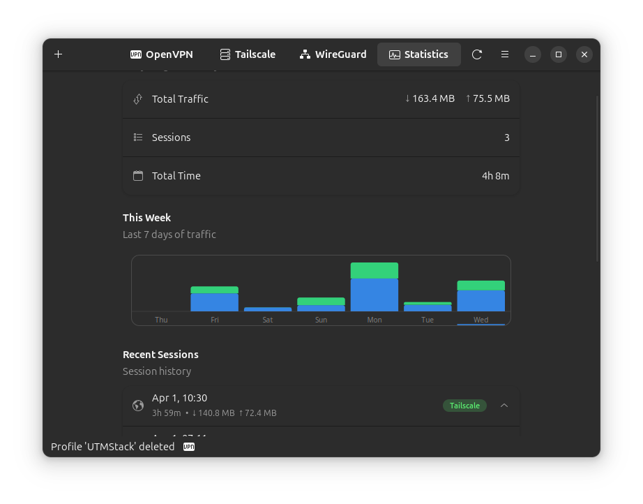
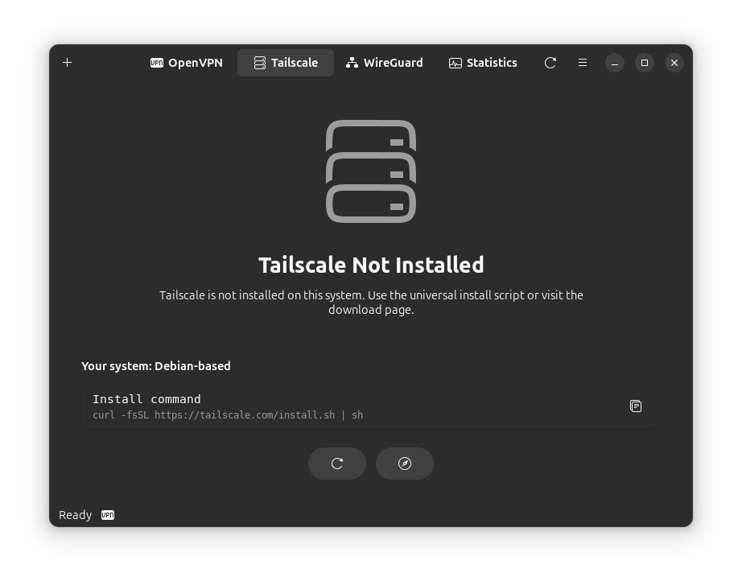

Kill Switch
Boot-persistent protection with state persistence and crash recovery. Blocks all traffic if VPN fails.





Real-time bandwidth graphs, session history, and weekly traffic charts. Unique to VPN Manager.
Boot-persistent protection with crash recovery. LAN access toggle and captive portal pause mode.
GTK4 + libadwaita for a beautiful, responsive experience. Follows GNOME HIG guidelines.
OpenVPN, WireGuard, and Tailscale in one beautiful app.
Enterprise features without the enterprise complexity. Built for Linux users who value both security and simplicity.
Boot-persistent protection with state persistence and crash recovery. Blocks all traffic if VPN fails.
systemd-resolved strict mode with firewall fallback ensures your DNS queries stay private.
Extended sysctl parameters and nftables inet rules prevent IPv6 traffic leaks.
Warns if a known network appears with a different access point. Protects against spoofing attacks.
Auto-manage VPN based on network trust. Connect on untrusted WiFi, disconnect at home.
Automatic connection restoration when network drops. Never lose your VPN protection.
Quick access without opening the app. Right-click for instant trust/untrust actions.
Choose what traffic goes through VPN. Run specific apps outside the tunnel.
Share your Tailscale exit node with other devices on your local network. One-click setup.
Modern design with dark/light themes. Fits perfectly with your GNOME desktop.
Import VPN profiles by dragging .ovpn files. Passwords saved securely in your keyring.
Control your VPN from the system tray. Quick connect/disconnect without opening the app.
See how VPN Manager compares to other solutions.
| Feature |
VPN Manager
|
NetworkManager
|
CLI Only
|
|---|---|---|---|
| Graphical Interface | ~ | ||
| Traffic Statistics | |||
| Kill Switch | ~ | ||
| Network Trust Rules | |||
| Tailscale Integration | |||
| Multi-Protocol | ~ | ||
| GNOME Native UI | ~ |
From download to connected in under 2 minutes.
Download the .deb/.rpm package or use our APT repository for automatic updates.
sudo apt install vpn-manager
Drag & drop your .ovpn file or paste a WireGuard config. Credentials stored in system keyring.
One click to connect. Kill switch, DNS protection, and traffic stats enabled by default.
Choose your distribution and follow the simple installation steps.
# Add VPN Manager APT repository (one-time setup)
curl -fsSL https://yllada.github.io/vpn-manager/apt/gpg.key | sudo gpg --dearmor -o /usr/share/keyrings/vpn-manager.gpg
echo "deb [signed-by=/usr/share/keyrings/vpn-manager.gpg] https://yllada.github.io/vpn-manager/apt stable main" | sudo tee /etc/apt/sources.list.d/vpn-manager.list
# Install VPN Manager
sudo apt update && sudo apt install vpn-manager
# Future updates: just run apt upgrade!
sudo apt update && sudo apt upgrade
Automatic updates with apt upgrade — Ubuntu 24.04+, Debian 12+
# Loading install command...Supported: Ubuntu 24.04+, Debian 12+
# Loading install command...Supported: Fedora 40+, RHEL 9+
# Loading install command...
Requires: sudo pacman -S gtk4 libadwaita
# Requirements: Go 1.21+, GTK4 4.14+, libadwaita 1.5+
# Clone and build
git clone https://github.com/yllada/vpn-manager.git
cd vpn-manager
go build -o vpn-manager .
# Install daemon (REQUIRED)
cd build && sudo ./install-daemon.sh && cd ..
# Install system-wide (optional)
sudo cp vpn-manager /usr/local/bin/
sudo cp assets/vpn-manager.desktop /usr/share/applications/
# Run
./vpn-manager⚠️ Important: The daemon is required for VPN Manager to function.
Everything you need to know before getting started.
VPN Manager supports three protocols:
Yes! VPN Manager works with any provider that offers OpenVPN (.ovpn) or WireGuard configuration files. This includes:
Just download your provider's config file and import it into VPN Manager.
VPN Manager requires GTK4 4.14+ and libadwaita 1.5+. Officially supported:
Any distro with the required GTK4/libadwaita versions should work when building from source.
VPN Manager runs as a normal user application. Privileged operations (like configuring network interfaces or the kill switch) are handled by a separate daemon (vpn-managerd) that runs as a systemd service.
This means:
The daemon is installed automatically with the .deb/.rpm packages and handles all VPN connections, kill switch, DNS protection, and more.
Yes! The kill switch is enterprise-grade with multiple safety layers:
Absolutely. VPN Manager uses your system's native keyring (GNOME Keyring, KWallet, or macOS Keychain) to store credentials securely.
Yes! While VPN Manager is designed for GNOME, it works on any Linux desktop with GTK4 support (KDE Plasma, XFCE, Cinnamon, etc.). The interface will adapt to your system theme.
100% free and open source under the MIT license. And no, there's absolutely zero telemetry.
VPN Manager is built by and for the Linux community. Privacy is a feature, not a selling point.
Real-time metrics from our open source project. Join thousands of Linux users who trust VPN Manager.
Be part of the community
VPN Manager is free, open source, and built with love for the Linux community. Join us!
Show your support and help others discover VPN Manager
Submit PRs, fix bugs, or add new features
Found a bug? Let us know and we'll fix it
Thanks to everyone who has contributed to VPN Manager